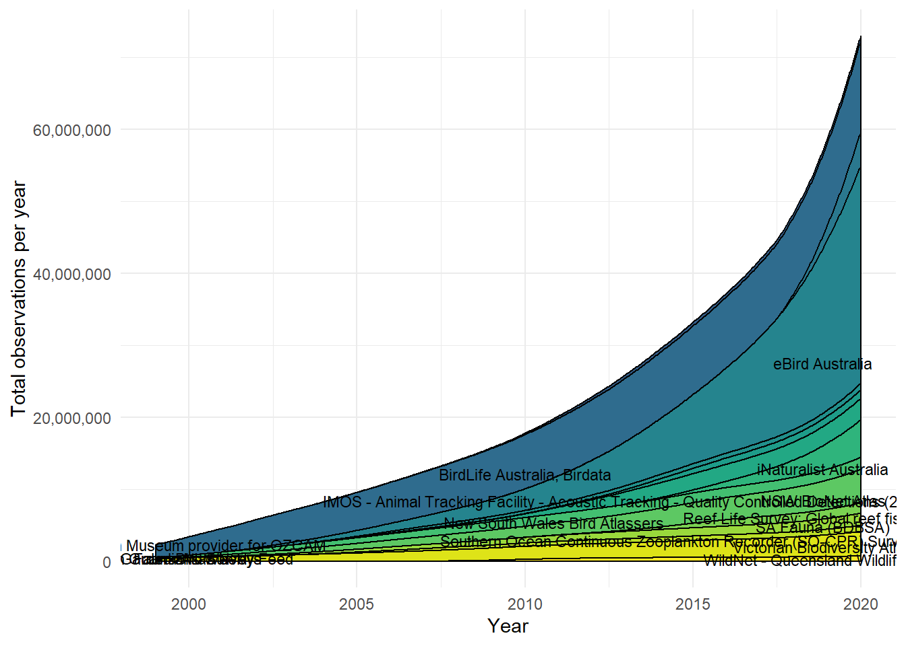
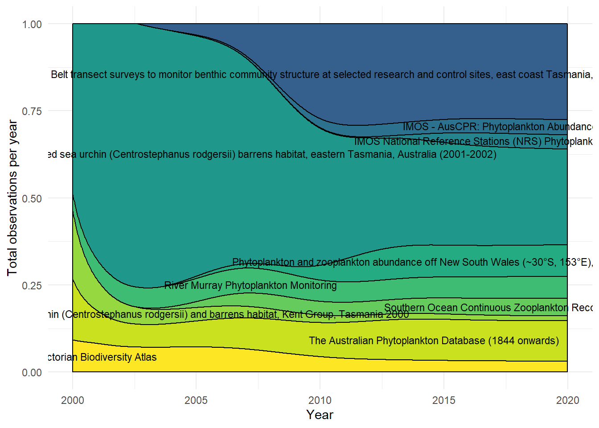
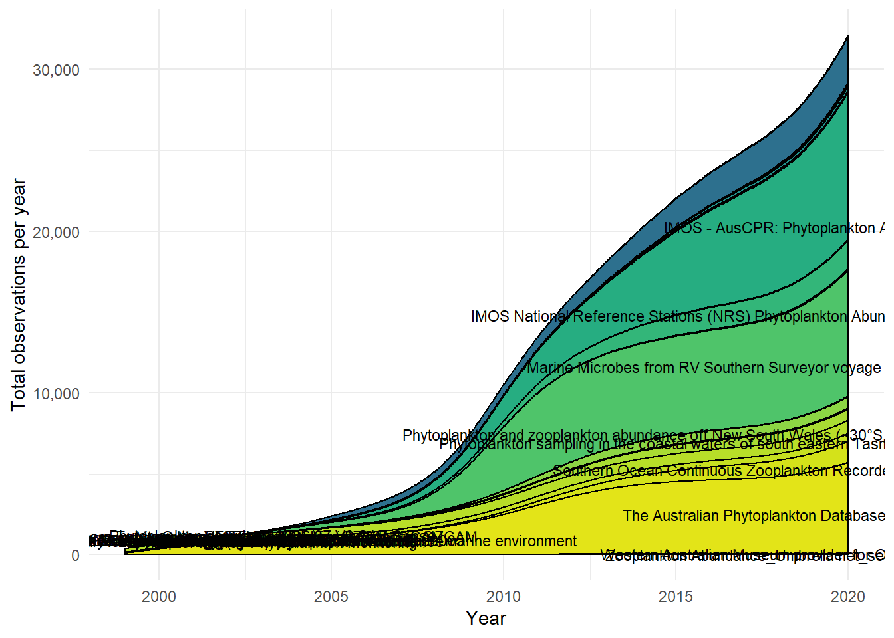

Analysis proposal
Dax Kellie
2021-09-21
Here are some possible ways to see the growth of citizen science data in the Atlas of Living Australia
Data providers
One way to see the growth of citizen science might be to first view the full number of records each data provider has added to the ALA.
# packages
library(galah)
library(tidyverse)
library(purrr)
library(viridis)
library(kableExtra)
library(pilot) # for colour palettesAs far as I can tell, dataResourceName contains the best data provider categories. Here are some examples:
# search_fields("data")
# find_field_values("dataResourceName")
provider_counts <- ala_counts(group_by = "dataResourceName", limit = 900)
provider_counts %>% slice(1:10) %>% kbl()| dataResourceName | count |
|---|---|
| eBird Australia | 26644454 |
| NSW BioNet Atlas | 12345357 |
| BirdLife Australia, Birdata | 11635460 |
| Victorian Biodiversity Atlas | 8285400 |
| New South Wales Bird Atlassers | 3381819 |
| First Bird Atlas | 2712345 |
| iNaturalist Australia | 2205928 |
| SA Flora (BDBSA) | 1911652 |
| Garden Bird Surveys | 1655345 |
| SA Fauna (BDBSA) | 1645756 |
Kingdoms
Here we can try to see the growth of records for each kingdom, and the proportion of records from each data provider
Use the buttons to look at each plot, and take note of the y axis because the number of records added changes quite a bit between kingdoms
# Extract kingdom names
kingdoms <- ala_counts(group_by = "kingdom", limit = 10)
kingdom_names <- pull(kingdoms, kingdom)
# What martin did to get them all (but his wasn't by year)
kingdom_counts <- kingdom_names %>%
map( ~ ala_counts(
taxa = select_taxa(list(kingdom = .x)),
group_by = "dataResourceName",
limit = 10
)) %>%
tibble(
kingdom = kingdom_names,
y = .) %>%
unnest(y)
# I think I just have to put this into a function and run it many times
# We have to do it this way because each select_filters() call builds a df
year_filter_1999 <- select_filters(year = 1999)
year_filter_2000 <- select_filters(year = 2000)
year_filter_2001 <- select_filters(year = 2001)
year_filter_2002 <- select_filters(year = 2002)
year_filter_2003 <- select_filters(year = 2003)
year_filter_2004 <- select_filters(year = 2004)
year_filter_2005 <- select_filters(year = 2005)
year_filter_2006 <- select_filters(year = 2006)
year_filter_2007 <- select_filters(year = 2007)
year_filter_2008 <- select_filters(year = 2008)
year_filter_2009 <- select_filters(year = 2009)
year_filter_2010 <- select_filters(year = 2010)
year_filter_2011 <- select_filters(year = 2011)
year_filter_2012 <- select_filters(year = 2012)
year_filter_2013 <- select_filters(year = 2013)
year_filter_2014 <- select_filters(year = 2014)
year_filter_2015 <- select_filters(year = 2015)
year_filter_2016 <- select_filters(year = 2016)
year_filter_2017 <- select_filters(year = 2017)
year_filter_2018 <- select_filters(year = 2018)
year_filter_2019 <- select_filters(year = 2019)
year_filter_2020 <- select_filters(year = 2020)
# Create a function that gets counts for all kingdoms and converts to data frame
get_year_counts <- function(year_filter, year_number) {
kingdom_counts <- kingdom_names %>%
map( ~ ala_counts(
taxa = select_taxa(list(kingdom = .x)),
filters = year_filter,
group_by = "dataResourceName",
limit = 900
)) %>%
tibble(
kingdom = kingdom_names,
year = rep(year_number),
y = .) %>%
unnest(y) %>% select(-name)
}
# Run this function for each year
counts_1999 <- get_year_counts(year_filter_1999, 1999)
counts_2000 <- get_year_counts(year_filter_2000, 2000)
counts_2001 <- get_year_counts(year_filter_2001, 2001)
counts_2002 <- get_year_counts(year_filter_2002, 2002)
counts_2003 <- get_year_counts(year_filter_2003, 2003)
counts_2004 <- get_year_counts(year_filter_2004, 2004)
counts_2005 <- get_year_counts(year_filter_2005, 2005)
counts_2006 <- get_year_counts(year_filter_2006, 2006)
counts_2007 <- get_year_counts(year_filter_2007, 2007)
counts_2008 <- get_year_counts(year_filter_2008, 2008)
counts_2009 <- get_year_counts(year_filter_2009, 2009)
counts_2010 <- get_year_counts(year_filter_2010, 2010)
counts_2011 <- get_year_counts(year_filter_2011, 2011)
counts_2012 <- get_year_counts(year_filter_2012, 2012)
counts_2013 <- get_year_counts(year_filter_2013, 2013)
counts_2014 <- get_year_counts(year_filter_2014, 2014)
counts_2015 <- get_year_counts(year_filter_2015, 2015)
counts_2016 <- get_year_counts(year_filter_2016, 2016)
counts_2017 <- get_year_counts(year_filter_2017, 2017)
counts_2018 <- get_year_counts(year_filter_2018, 2018)
counts_2019 <- get_year_counts(year_filter_2019, 2019)
counts_2020 <- get_year_counts(year_filter_2020, 2020)
# merge all the years
counts_99_to_20 <- rbind(counts_1999, counts_2000, counts_2001, counts_2002, counts_2003,
counts_2004, counts_2005, counts_2006, counts_2007, counts_2008,
counts_2009, counts_2010, counts_2011, counts_2012, counts_2013,
counts_2014, counts_2015, counts_2016, counts_2017, counts_2018,
counts_2019, counts_2020)
# Get complete list of possible kingdoms and dataResources
# Extract resources names
resources <- find_field_values("dataResourceName", limit = 900)
resource_names <- pull(resources, category)
resource_names <- resource_names %>% str_trim() # trim whitespace
# Use crossing() to find all possible combinations of inputs
years_list <- 1999:2020
king_df <- crossing(kingdom_names, years_list, resource_names)
king_df <- king_df %>% # Do some renaming before merging
rename(kingdom = kingdom_names,
year = years_list,
dataResourceName = resource_names)
# Get missing values
full_counts <- king_df %>%
left_join(counts_99_to_20) %>%
replace_na(list(count = 0)) # replace NAs
full_counts <- full_counts %>%
group_by(kingdom, dataResourceName) %>%
mutate(
cum_count = cumsum(count)
)
# full_counts %>% slice(1:10)
# full_counts %>% filter(kingdom == "Fungi") %>% filter(dataResourceName == "Fungimap")#------------ Plot ---------------#
library(ggstream)
library(viridis)
# Tidy dataframe
full_counts_tidy <- full_counts %>%
mutate(across(where(is.character), as.factor))
# Plotting stacked area chart function
plot_stream_plot_stacked <- function(kingdom_name, at_least_this_many_records){
full_counts_tidy %>%
drop_na() %>%
filter(kingdom == as.character(kingdom_name)) %>%
group_by(kingdom, dataResourceName) %>%
dplyr::summarise(total = cumsum(count),
year = year) %>%
filter(total > at_least_this_many_records) %>% # filter records
ggplot(aes(x = year, # Plot
y = total,
fill = str_wrap(dataResourceName))) +
geom_stream(color = "black",
extra_span = .013,
type = "ridge", bw = .9, sorting = "onset") +
geom_stream_label(aes(label = dataResourceName),
size = 3, type = "ridge",
colour = "black", sorting = "onset") +
scale_fill_viridis_d(option = "D", begin = 0.3) +
guides(fill = guide_legend(title = "Data provider")) +
scale_x_continuous(name = "Year") +
scale_y_continuous(name = "Total observations per year",
labels = scales::comma) +
theme_minimal() +
theme(legend.position = "none")
}
# Plotting proportional area chart function
plot_stream_plot_prop <- function(kingdom_name, at_least_this_many_records){
full_counts_tidy %>%
drop_na() %>%
filter(kingdom == as.character(kingdom_name)) %>%
group_by(kingdom, dataResourceName) %>%
dplyr::summarise(total = cumsum(count),
year = year) %>%
filter(total > at_least_this_many_records) %>% # filter records
ggplot(aes(x = year, # Plot
y = total,
fill = str_wrap(dataResourceName))) +
geom_stream(color = "black",
extra_span = .013,
type = "proportional", bw = .9, sorting = "onset") +
geom_stream_label(aes(label = dataResourceName),
size = 3, type = "proportional",
colour = "black", sorting = "onset") +
scale_fill_viridis_d(option = "D", begin = 0.3) +
guides(fill = guide_legend(title = "Data provider")) +
scale_x_continuous(name = "Year") +
scale_y_continuous(name = "Total observations per year",
labels = scales::comma) +
theme_minimal() +
theme(legend.position = "none")
}Plots
Animalia
plot_stream_plot_stacked("Animalia", 200000)
plot_stream_plot_prop("Animalia", 200000)Plantae
plot_stream_plot_stacked("Plantae", 125000)plot_stream_plot_prop("Plantae", 125000)Fungi
plot_stream_plot_stacked("Fungi", 5000)plot_stream_plot_prop("Fungi", 5000)Bacteria
plot_stream_plot_stacked("Bacteria", 50)
plot_stream_plot_prop("Bacteria", 50)Chromista
plot_stream_plot_stacked("Chromista", 10000)
plot_stream_plot_prop("Chromista", 10000)
Protista
plot_stream_plot_stacked("Protista", 1)
plot_stream_plot_prop("Protista", 1)Protozoa
plot_stream_plot_stacked("Protozoa", 1)plot_stream_plot_prop("Protozoa", 1)Rate of change per year
It might also be useful to see the rate that observations from data providers are inflating/deflating. Considering records from eBird appear to be growing the fastest, let’s have a look at the numbers:
# Calculate rate of change in observations by year
rate_of_change <- full_counts %>%
group_by(kingdom, dataResourceName) %>%
mutate(pct_change = (((lead(count)/count) - 1)*100))
rate_of_change <- rate_of_change %>% group_by(kingdom, year) %>% mutate(yearly_total = sum(count),
prop = count/yearly_total)
rate_of_change$pct_change[is.nan(rate_of_change$pct_change)]<-0
# Table of percent change
rate_of_change %>%
filter(kingdom == "Animalia") %>%
filter(dataResourceName == "eBird Australia") %>% kbl() %>% kable_styling()| kingdom | year | dataResourceName | count | cum_count | pct_change | yearly_total | prop |
|---|---|---|---|---|---|---|---|
| Animalia | 1999 | eBird Australia | 77577 | 77577 | 21.322041 | 1998287 | 0.0388218 |
| Animalia | 2000 | eBird Australia | 94118 | 171695 | 29.966638 | 2124581 | 0.0442996 |
| Animalia | 2001 | eBird Australia | 122322 | 294017 | 17.026373 | 2022758 | 0.0604729 |
| Animalia | 2002 | eBird Australia | 143149 | 437166 | 2.352095 | 1293293 | 0.1106857 |
| Animalia | 2003 | eBird Australia | 146516 | 583682 | 19.791013 | 1211394 | 0.1209483 |
| Animalia | 2004 | eBird Australia | 175513 | 759195 | 1.473965 | 1320442 | 0.1329199 |
| Animalia | 2005 | eBird Australia | 178100 | 937295 | 10.422796 | 1280320 | 0.1391058 |
| Animalia | 2006 | eBird Australia | 196663 | 1133958 | 14.423659 | 1292648 | 0.1521396 |
| Animalia | 2007 | eBird Australia | 225029 | 1358987 | 16.698737 | 1327745 | 0.1694821 |
| Animalia | 2008 | eBird Australia | 262606 | 1621593 | 32.245646 | 1447682 | 0.1813976 |
| Animalia | 2009 | eBird Australia | 347285 | 1968878 | 16.814432 | 1581641 | 0.2195726 |
| Animalia | 2010 | eBird Australia | 405679 | 2374557 | 50.744554 | 1643767 | 0.2467984 |
| Animalia | 2011 | eBird Australia | 611539 | 2986096 | 33.688448 | 1802026 | 0.3393619 |
| Animalia | 2012 | eBird Australia | 817557 | 3803653 | 39.963941 | 2324527 | 0.3517090 |
| Animalia | 2013 | eBird Australia | 1144285 | 4947938 | 27.861241 | 2723781 | 0.4201090 |
| Animalia | 2014 | eBird Australia | 1463097 | 6411035 | 22.734856 | 2970095 | 0.4926095 |
| Animalia | 2015 | eBird Australia | 1795730 | 8206765 | 27.509035 | 3052755 | 0.5882326 |
| Animalia | 2016 | eBird Australia | 2289718 | 10496483 | 24.023482 | 3304471 | 0.6929151 |
| Animalia | 2017 | eBird Australia | 2839788 | 13336271 | 27.426132 | 3956552 | 0.7177431 |
| Animalia | 2018 | eBird Australia | 3618632 | 16954903 | 15.158104 | 4954391 | 0.7303889 |
| Animalia | 2019 | eBird Australia | 4167148 | 21122051 | 10.081091 | 5034446 | 0.8277272 |
| Animalia | 2020 | eBird Australia | 4587242 | 25709293 | NA | 5269196 | 0.8705772 |
It’s worth noting 2 things:
- The rate of change from 2008 to 2012 is massive
- Anything more than a 20% increase after 2012 translates to an increase of > 100000 records. So just because the rate of change is lower than in 2012 doesn’t tell the full story because we are talking about so many records
In the following plot, increasing observations are on the x axis, the proportion of records that year are on the y axis, and the size of the dot represents the cumulative count of records in the ALA. Small dots near the bottom left corner are data providers that provide relatively small numbers of observations each year, whereas large dots near the upper right corner are data providers that provide relatively large numbers of observations each year
What is interesting is that only more recently did citizen science app data like eBird become the majority of yearly records added to the ALA. This change happens closer to 2017 rather than 2010/11.
(This plot only shows Animalia data)
# list of names for the plot
data_resource_names <- full_counts_tidy %>%
drop_na() %>%
filter(kingdom == as.character("Animalia")) %>%
group_by(kingdom, dataResourceName) %>%
dplyr::summarise(total = cumsum(count),
year = year) %>%
filter(total > 200000) %>%
distinct(dataResourceName) %>%
ungroup(.) %>%
select(dataResourceName)
library(gganimate)
library(ggrepel)
## animated ggplot2
rate_of_change %>%
filter(kingdom == "Animalia") %>%
# filter(count > 1) %>%
filter(pct_change < 20) %>%
filter(year > 2000) %>%
filter(dataResourceName %in% data_resource_names$dataResourceName) %>%
mutate(label = case_when(dataResourceName == "eBird Australia" ~ dataResourceName,
dataResourceName == "iNaturalist" ~ dataResourceName,
prop > 0.1 ~ dataResourceName,
TRUE ~ '')) %>%
ggplot(aes(cum_count, prop, size = cum_count, colour = dataResourceName, label = label)) +
geom_point(alpha = 0.7, show.legend = FALSE) +
geom_hline(yintercept = 0, color = "black", size = 1) +
geom_vline(xintercept = 0, color = "black", size = 1) +
scale_colour_viridis_d() +
geom_text_repel(max.overlaps = 100,
box.padding = 1) +
theme_minimal() +
theme(legend.position = "none") +
# Here comes the gganimate specific bits
labs(title = 'year: {frame_time}', x = 'Number of obvs in Atlas', y = 'Proportion of total records each year') +
transition_time(year) +
ease_aes('linear')Popular species vs unpopular species
Earlier this year we figured out how to build flexible decision trees that make hierarchical decisions based on some variable, for example observation counts. In other words, we can build a tree of “importance” based on which clades have the most observations in the ALA.
What could be useful is to compare the number of observations from citizen science vs non-citizen science data providers between clades with the most observations and the rest of the ALA.
I have pulled that info from that analysis to see what the top 20(ish) clades are in the ALA by number of observations.
List of most popular clades
# Get data of clades with highest number of observations
top_clades <- readRDS(here::here("projects", "data_holdings", "taxonomic", "data", "summary-tree_top-taxa-list.rds"))
# Extract names
top_clade_names <- top_clades %>% filter(type == 2) %>% pull(., label)
# Find taxon concept id within ALA
top_orders_dfr <- top_clade_names %>%
map( ~ select_taxa(list(.x))) %>% # run select_taxa() for each name
plyr::ldply (., data.frame) %>% # convert to df
# filter(kingdom == "Animalia") %>% # filter to only animal kingdom
filter(!is.na(order)) # select only those down to order
top_orders_dfr %>% select(vernacular_name, class) %>% distinct(class, vernacular_name)## vernacular_name class
## 1 Magpie Goose Aves
## 2 Waders, Gulls and Terns, Auks Aves
## 3 Herons, Ibises, Storks and Allies Aves
## 4 Pigeons and Doves Aves
## 5 Kingfishers, Bee-eaters, Rollers and Allies Aves
## 6 Diurnal Birds of Prey Aves
## 7 Rails, Cranes and Allies Aves
## 8 Pelicans, Gannets, Cormorants and Allies Aves
## 9 Cockatoos and Parrots Aves
## 10 <NA> Equisetopsida
## 11 Cuckoo-shrikes Aves
## 12 <NA> Aves
## 13 Starlings and oxpeckers Aves
## 14 Swallows and Martins Aves
## 15 Crows and Jays Aves
## 16 Monarch Flycatchers Aves
## 17 Whistlers and Allies Aves
## 18 Australasian Warblers Aves
## 19 Woodswallows Aves
## 20 Honeyeaters AvesWow they are nearly all birds. Perhaps it might be best to compare other taxonomic classes with Aves to see how different bird observations are compared with observations of other species.
Here are the top 10 classes
# Extract class names
classes <- ala_counts(group_by = "class", limit = 320)
class_names <- pull(classes, class)
classes[1:10,] # top 10## class count
## 1 Aves 59749558
## 2 Equisetopsida 20770773
## 3 Mammalia 3199880
## 4 Insecta 3156325
## 5 Actinopterygii 2918427
## 6 Reptilia 1303015
## 7 Chondrichthyes 841688
## 8 Gastropoda 826746
## 9 Amphibia 815506
## 10 Agaricomycetes 681775Birds vs the rest
Let’s try comparing the proportion of occurrences from citizen science and non-citizen science data providers for Aves vs all the other classes.
# Separate Aves
class_aves <- "Aves"
class_not_aves <- class_names[!class_names %in% "Aves"]
# Create a function that gets counts for all classes and converts to data frame
get_year_counts_by_class <- function(year_filter, year_number, class_df) {
ala_counts(
taxa = select_taxa(as.list(class_df)),
filters = year_filter,
group_by = "dataResourceName",
limit = 900) %>%
tibble() %>%
mutate(year = rep(year_number))
}
# Run this function for each year
all_filters <- list(year_filter_1999, year_filter_2000, year_filter_2001,
year_filter_2002, year_filter_2003, year_filter_2004,
year_filter_2005, year_filter_2006, year_filter_2007,
year_filter_2008, year_filter_2009, year_filter_2010,
year_filter_2011, year_filter_2012, year_filter_2013,
year_filter_2014, year_filter_2015, year_filter_2016,
year_filter_2017, year_filter_2018, year_filter_2019,
year_filter_2020)
all_years <- 1999:2020
# Get counts for Aves
class_counts_aves <- map2_dfr(.x = all_filters, .y = all_years,
~ {get_year_counts_by_class(.x, .y, class_aves)})
# Use crossing() to find all possible combinations dataProviders and years
# resource_names[1:5] # We already have a full list of resource names
all_combos_of_years <- crossing(all_years, resource_names)
# Do some renaming before merging
all_combos_of_years <- all_combos_of_years %>%
rename(year = all_years,
dataResourceName = resource_names)
# Merge and replace NAs with zeros
class_aves_full_counts <- all_combos_of_years %>%
left_join(class_counts_aves) %>%
replace_na(list(count = 0)) # replace NAs
# class_aves_full_counts %>% slice(1:10)
# Get counts for all other not Aves classes
class_counts_not_aves <- map2_dfr(.x = all_filters, .y = all_years,
~ {get_year_counts_by_class(.x, .y, class_not_aves)})
# Merge with all_combos_of_years and replace NAs with zeros
class_not_aves_full_counts <- all_combos_of_years %>%
left_join(class_counts_not_aves) %>%
replace_na(list(count = 0)) # replace NAs
# class_not_aves_full_counts %>% slice(1:10)Plot
Use the buttons to see plots
make_plotting_df <- function(df, at_least_this_many_records) {
df %>%
drop_na() %>%
group_by(dataResourceName) %>%
dplyr::summarise(total = cumsum(count),
year = year) %>%
filter(total > at_least_this_many_records) %>% # filter records
mutate(across(where(is.character), as.factor))
}
# Plotting stacked area chart function
plot_stream_plot_stacked <- function(df){
df %>%
ggplot(aes(x = year, # Plot
y = total,
fill = str_wrap(dataResourceName))) +
geom_stream(color = "black",
extra_span = .013,
type = "ridge", bw = .9, sorting = "onset") +
geom_stream_label(aes(label = dataResourceName),
size = 3, type = "ridge",
colour = "black", sorting = "onset") +
scale_fill_viridis_d(option = "D", begin = 0.3) +
guides(fill = guide_legend(title = "Data provider")) +
scale_x_continuous(name = "Year") +
scale_y_continuous(name = "Total observations per year",
labels = scales::comma) +
theme_minimal() +
theme(legend.position = "none")
}
# Plotting proportional area chart function
plot_stream_plot_prop <- function(df){
df %>%
ggplot(aes(x = year, # Plot
y = total,
fill = str_wrap(dataResourceName))) +
geom_stream(color = "black",
extra_span = .013,
type = "proportional", bw = .9, sorting = "onset") +
geom_stream_label(aes(label = dataResourceName),
size = 3, type = "proportional",
colour = "black", sorting = "onset") +
scale_fill_viridis_d(option = "D", begin = 0.3) +
# guides(fill = guide_legend(title = "Data provider")) +
scale_x_continuous(name = "Year") +
scale_y_continuous(name = "Proportion of total records",
labels = scales::comma) +
theme_minimal() +
theme(legend.position = "none")
}Cumulative number
aves_plot_df <- make_plotting_df(class_aves_full_counts, 1000000)
not_aves_plot_df <- make_plotting_df(class_not_aves_full_counts, 1000000)
# plot 1
library(patchwork)
p1 <- plot_stream_plot_stacked(aves_plot_df)
p2 <- plot_stream_plot_stacked(not_aves_plot_df)
p1 p2
Proportions
# plot 2
p3 <- plot_stream_plot_prop(aves_plot_df)
p4 <- plot_stream_plot_prop(not_aves_plot_df)
p3 p4
Records from 2020 only
Looking at only 2020 records shows how important citizen science records are for Aves. eBird records alone account for more than 95% of occurrence records added to the ALA in 2020 for birds. In comparison, iNaturalist records accounted for ~57% of all records added to the ALA in 2020 for all other classes.
It’s worth noticing that these trends closely resemble the difference between Animalia and Plantae plots in the “Kingdoms” section above
Tables
prop_table_aves <- class_counts_aves %>%
group_by(year) %>%
mutate(yearly_total = sum(count),
dataResourceName = str_trim(dataResourceName)) %>%
group_by(dataResourceName, year) %>%
summarise(
prop = round((count/yearly_total)*100, 3)) %>%
filter(year == 2020) %>%
arrange(desc(prop))
prop_table_not_aves <- class_counts_not_aves %>%
group_by(year) %>%
mutate(yearly_total = sum(count),
dataResourceName = str_trim(dataResourceName)) %>%
group_by(dataResourceName, year) %>%
summarise(
prop = round((count/yearly_total)*100, 3)) %>%
filter(year == 2020) %>%
arrange(desc(prop))
prop_table_aves %>%
kbl(caption = "Top record providers - Aves") %>% kable_styling()| dataResourceName | year | prop |
|---|---|---|
| eBird Australia | 2020 | 95.546 |
| iNaturalist Australia | 2020 | 1.955 |
| NSW BioNet Atlas | 2020 | 1.594 |
| Earth Guardians Weekly Feed | 2020 | 0.414 |
| SA Fauna (BDBSA) | 2020 | 0.240 |
| Canberra Nature Map | 2020 | 0.060 |
| Port Adelaide Enfield Flora & Fauna Monitoring | 2020 | 0.040 |
| Wildlife Watch NSC | 2020 | 0.036 |
| WCPS Bird Survey Project | 2020 | 0.018 |
| Eyre Peninsula’s Bird Monitoring Program | 2020 | 0.017 |
| Atlas of Life in the Coastal Wilderness | 2020 | 0.016 |
| Victorian Biodiversity Atlas | 2020 | 0.010 |
| ALA species sightings and OzAtlas | 2020 | 0.009 |
| Superb Parrot Monitoring project | 2020 | 0.008 |
| Australian National Wildlife Collection provider for OZCAM | 2020 | 0.007 |
| Tempe birdos | 2020 | 0.007 |
| Budawang Coast Nature Map | 2020 | 0.006 |
| Albury Wodonga Nature Map | 2020 | 0.005 |
| Southern Highlands Nature Map | 2020 | 0.004 |
| Birdos along the Greenway | 2020 | 0.003 |
| My species list | 2020 | 0.003 |
| ibsa_bennelongia | 2020 | 0.001 |
| Northern Territory WildWatch | 2020 | 0.001 |
| Australian Museum provider for OZCAM | 2020 | 0.000 |
| Cockatoos in the Hood | 2020 | 0.000 |
| Lizard Island Research Station | 2020 | 0.000 |
| Museums Victoria provider for OZCAM | 2020 | 0.000 |
| Noosa Shire Nature Map | 2020 | 0.000 |
| Queen Victoria Museum Art Gallery provider for OZCAM | 2020 | 0.000 |
| South Australian Museum Australia provider for OZCAM | 2020 | 0.000 |
| Thredbo Park Bushcare Group | 2020 | 0.000 |
prop_table_not_aves %>%
kbl(caption = "Top record providers - Everything but Aves") %>% kable_styling()| dataResourceName | year | prop |
|---|---|---|
| iNaturalist Australia | 2020 | 57.460 |
| NSW BioNet Atlas | 2020 | 27.152 |
| Earth Guardians Weekly Feed | 2020 | 4.419 |
| SA Fauna (BDBSA) | 2020 | 2.401 |
| SA Flora (BDBSA) | 2020 | 2.110 |
| Canberra Nature Map | 2020 | 1.696 |
| Butterflies Australia | 2020 | 0.824 |
| Flora Atlas N.T. | 2020 | 0.782 |
| Victorian Biodiversity Atlas | 2020 | 0.383 |
| Tasmanian Museum and Art Gallery provider for OZCAM | 2020 | 0.319 |
| Atlas of Life in the Coastal Wilderness | 2020 | 0.184 |
| Budawang Coast Nature Map | 2020 | 0.184 |
| ALA species sightings and OzAtlas | 2020 | 0.165 |
| BRI AVH data | 2020 | 0.138 |
| North East Dung Beetle Project | 2020 | 0.136 |
| New Zealand Virtual Herbarium | 2020 | 0.132 |
| FrogWatch SA | 2020 | 0.121 |
| NSW AVH data | 2020 | 0.117 |
| CANB AVH data | 2020 | 0.114 |
| Australian Museum provider for OZCAM | 2020 | 0.106 |
| Lizard Island Research Station | 2020 | 0.092 |
| DNA AVH data | 2020 | 0.083 |
| MEL AVH data | 2020 | 0.064 |
| PERTH AVH data | 2020 | 0.063 |
| Australian Platypus Conservancy | 2020 | 0.054 |
| Southern Highlands Nature Map | 2020 | 0.051 |
| Frogwatch ACT and Region | 2020 | 0.045 |
| HO AVH data | 2020 | 0.042 |
| NE AVH data | 2020 | 0.041 |
| Albury Wodonga Nature Map | 2020 | 0.039 |
| Team Turtle CQ | 2020 | 0.038 |
| Southern ACT Catchment - Upper Murrumbidgee Waterwatch | 2020 | 0.033 |
| Queensland Museum provider for OZCAM | 2020 | 0.032 |
| Koala Count | 2020 | 0.031 |
| Wildlife Watch NSC | 2020 | 0.029 |
| ibsa_bennelongia | 2020 | 0.028 |
| Tweed Koala Sightings | 2020 | 0.027 |
| Molonglo Conservation Group - Upper Murrumbidgee Waterwatch | 2020 | 0.026 |
| My species list | 2020 | 0.026 |
| Melbourne Water Frog Census | 2020 | 0.020 |
| Bangalow Koalas | 2020 | 0.019 |
| Southern Ocean Continuous Zooplankton Recorder (SO-CPR) Survey | 2020 | 0.019 |
| CNS AVH data | 2020 | 0.018 |
| Queen Victoria Museum Art Gallery provider for OZCAM | 2020 | 0.018 |
| Fauna Atlas N.T. | 2020 | 0.014 |
| Museums Victoria provider for OZCAM | 2020 | 0.014 |
| Dung Beetle Ecosystem Engineers | 2020 | 0.013 |
| Lost fungi Australia | 2020 | 0.011 |
| Martin Butterfield Mallacoota Observations | 2020 | 0.010 |
| Northern Territory WildWatch | 2020 | 0.010 |
| ReefWatch | 2020 | 0.009 |
| Kangaroo Island Dunnart Project | 2020 | 0.005 |
| Wingecarribee Shire Council Macroinvertebrate Sampling | 2020 | 0.005 |
| Australian National Wildlife Collection provider for OZCAM | 2020 | 0.004 |
| JCT AVH data | 2020 | 0.004 |
| Paterson’s curse and Viper’s bugloss biocontrol | 2020 | 0.004 |
| South Australian Museum Australia provider for OZCAM | 2020 | 0.004 |
| Australian National Fish Collection | 2020 | 0.003 |
| Burgoigee Creek Landcare Nest Box Monitoring | 2020 | 0.002 |
| Encyclopedia of Life Images - Flickr Group | 2020 | 0.001 |
| Fungimap | 2020 | 0.001 |
| NatureShare | 2020 | 0.001 |
| Noosa Shire Nature Map | 2020 | 0.001 |
| Records of the Australian National Botanic Gardens Seedbank | 2020 | 0.001 |
| Sea Slug Survey Gold Coast | 2020 | 0.001 |
| St John’s wort biocontrol | 2020 | 0.001 |
| Thredbo Park Bushcare Group | 2020 | 0.001 |
| Birdos along the Greenway | 2020 | 0.000 |
| City of Kalamunda Biodiversity Inventory | 2020 | 0.000 |
| CSIRO Ichthyology provider for OZCAM | 2020 | 0.000 |
| Echidna-CSI | 2020 | 0.000 |
| melu_avh | 2020 | 0.000 |
| Port Adelaide Enfield Flora & Fauna Monitoring | 2020 | 0.000 |
| Sea Search | 2020 | 0.000 |
| Species at 290 Leppitt Road, Upper Beaconsfield | 2020 | 0.000 |
| WOLL AVH data | 2020 | 0.000 |
Plot
Plots only shows data providers that supply more than 0.1% of total observations
prop_plot1 <- prop_table_aves %>% filter(prop > 0.1) %>%
ggplot(aes(x = reorder(dataResourceName, prop), y = prop, fill = dataResourceName)) +
geom_bar(stat = "identity") +
scale_y_continuous(labels = paste0(as.character(c(seq(0, 100, 25))), "%")) +
ylim(c(0, 100)) +
labs(title = "ALA Records 2020",
subtitle = "Aves",
x = "Data Providers",
y = "Proportion of Records") +
theme_minimal() +
theme(legend.position = "none") +
coord_flip()
prop_plot2 <- prop_table_not_aves %>% filter(prop > 0.1) %>%
ggplot(aes(x = reorder(dataResourceName, prop), y = prop, fill = dataResourceName)) +
geom_bar(stat = "identity") +
ylim(c(0, 100)) +
# scale_y_continuous(labels = paste0(as.character(c(seq(0, 100, 25))), "%")) +
labs(subtitle = "All Classes but Aves",
x = "Data Providers",
y = "Proportion of Records") +
theme_minimal() +
theme(legend.position = "none") +
coord_flip()
prop_plot1prop_plot2Type of record
So I made a version of this before that was wrong - I wasn’t getting the correct number of records - but now it’s fixed
Another way we might be able to see the growth of citizen records is to look at the cumulative number of different types of records added to the ALA over time. This is a replication of plots Matilda made in her Shiny app
# Create a function that gets counts by record type
get_year_counts_by_record_type <- function(year_filter, year_number) {
ala_counts(
filters = year_filter,
group_by = "basisOfRecord",
limit = 900) %>%
tibble() %>%
mutate(year = rep(year_number))
}
# by record type
record_type <- map2_dfr(.x = all_filters, .y = all_years,
~ {get_year_counts_by_record_type(.x, .y)})
record_type <- record_type %>%
mutate(basisOfRecord = stringr::str_to_title(basisOfRecord))
record_type %>%
drop_na() %>%
group_by(basisOfRecord) %>%
dplyr::summarise(count = count,
total = sum(count),
cum_total = cumsum(count),
year = year) %>%
ggplot(aes(x = year,
y = cum_total,
fill = reorder(basisOfRecord, -cum_total))) +
geom_bar(stat = "identity") +
scale_y_continuous(labels = scales::label_number_si()) +
labs(x = "Year", y = "Number of Records") +
guides(fill = guide_legend(title = "Basis of Record")) +
theme_pilot() +
scale_color_pilot()Other
#Ideas
# | Number of unique observations over time
# Extract species names for a given year
# species <- ala_counts(group_by = "species", filters = select_filters(year = 2001), limit = 50000)
# species_names <- pull(species, species)
#TODO : You can create a loop to extract names of species for each year, then compare unique values
# But this doesn't get at whether phone apps brought about a change#-------------------------------------------------------------------------------
# | Rate of observations in bushfire areas before vs after bushfires <- too difficult
# | Could check number of papers published using ALA species distributions over time